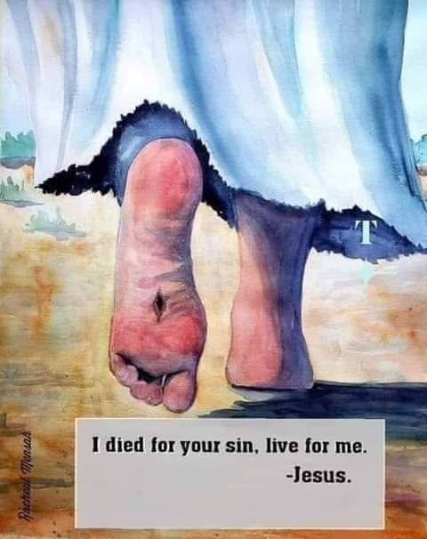

HAVE COMPASSION ON THEM MISSIONS (HCTM) is a ministry saddled with the responsibility of winning souls and providing support for missionaries.

HAVE COMPASSION ON THEM MISSIONS (HCTM) is a ministry saddled with the responsibility of winning souls and providing support for missionaries.
The mandate is to
Restore the act of grassroot discipleship among believers
Revive the missionary spirit in every believer in Christ.
Reach the unreached people,unreached places and suffering saints for Christ with both the gospel message and various support systems.
Support systems in term of
PRAYER INTERCESSION FOR SOULS
PROVISION OF FINANCES,FOOD AND SHELTER FOR MISSIONARIES.
Right now we have a network of missionaries in all states doing the work of discipleship.
Right now we have student missionaries undergoing training.
Right now,there is a dare need of many more who will be willing to go for Christ and be lost from the worldly amusement inorder to save the lost.
Right now we are in need of BELIEVERS IN CHRIST who are ready to support suffering missionaries.
Right now God is in need of those who can join us for intercession. We have been on a marathon intercession since 868 days ago.
You can let me know if you're interested and you know you will be committed.
As a matter of fact,and to the glory of God,we labour more in the secret because we know our God detest undue publicity.
We currently have many missionaries who are in need of support.
If you're not a believer, your support is not needed please.
If you're a believer with a burden to wipe tears from eyes of missionaries on the field, please get in touch with me on whatsapp 08123428989.
Soon we will begin to organise online revival training on the ACTS OF MISSIONS AND SOUL WINNING: RESPONSIBILITY OF EVERY BELIEVER.
If a believer decides to remain unfruitful in his or her pilgrims journey, then such believer is already lost with the lost world.
Since you became saved through the shed blood of Jesus, you have not personally discipled another person. Or you have become history in the act. You need God's touch afresh.
If Jesus has lost you as a believer simply because you're not doing what He instructed. Then you are of all men most miserable.
It is this burden for other souls that should engulf your heart as a believer, not just the enjoyment you recieve from fellowship with God.
And if you are privileged to support those with this burden. Even me I will jealous you, because I know the secret of supporting God's dream. People who support are likely to divert God's attention to themselves more than those who are suffering for the work. Reason before any man can beat me in giving,it must mean that fellow is in total surrenderness too. Quality of sacrifice is the key,not the quantity.
In your various vicinity, begin to show the light of Christ. Think replication of grace from you to others. Think personal evangelism. Think God's judgement upon you if you don't represent and reproduce Him well.
Have compassion on them.
Have compassion on the lost to rescue
Have compassion on the least of His servants who are toiling day&night.
May the burden for salvation of souls consume your heart afresh. May your heart become awakened in Jesus name.
You won't go an empty handed to meet your Saviour so.
You and I will become so fruitful in Jesus name. Amen